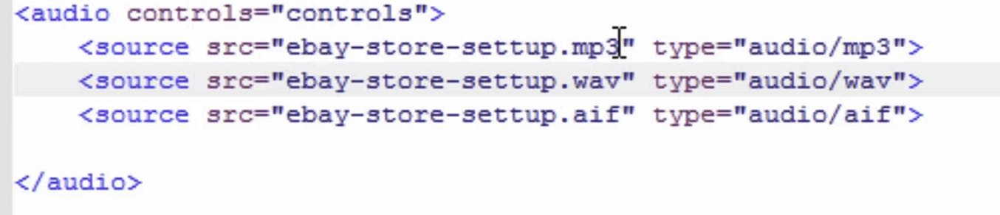

This is my html webpages demonstrating what I learned from the course Master the Basics of HTML5 and CSS3: Beginner Web Development. I am viewing the videos first and then trying to apply what I learned on this page from memory.
One of the first new things I leaned about is the break.
From videos 5 and 6, I learned about nesting tags to add more than one styling element
to text and how to change colors for the background and text. You can see examples of my
use of these skills in this page.
Audio and Video tags allow you to put in audio and video files without the use of extensions like Flash or Quicktime. For audio, WAV has the most compatibility across browsers.
Since different browsers will display content differently, it is recommended to have all four major browsers installed on your designated programming computer:
To convert one file type to another for compatibility across multiple browsers, you can visit online-convert.com. Below is an image of what the audio tag may look like within the html code:

Video tags are not as commonly utilized. Video hosting is expensive, and there is very little uniformity across browsers, so you would need to host 4 different files for every video to ensure compatibility. Therefore, Flash and Quicktime are still go-tos for video hosting on many sites.